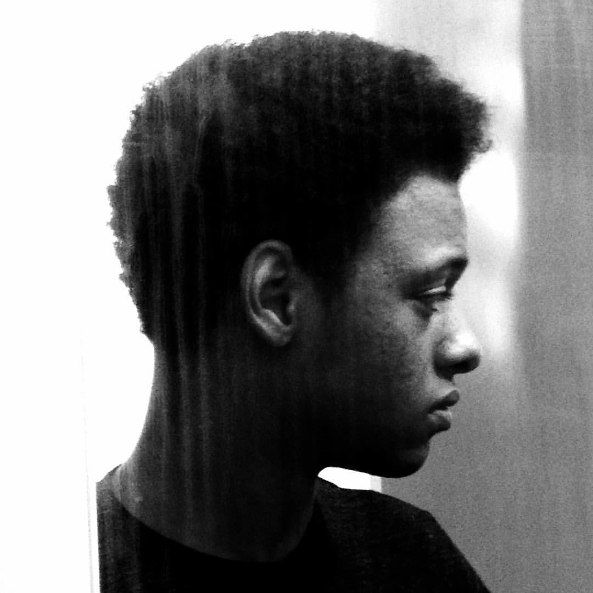

About Me
I’m a self-teaching full-stack developer that has completed the front-end section of Codecademy’s full-stack path. Over the years, have learned the fundamentals of programming at a basic level, multiple times, but I was otherwise involved with a discipline that has remarkably prepared me for this role as my workflow has remained exactly the same. I treat Codecademy as my client and instead of editing or creating audio information, I am editing and or creating code. I never thought in a million years I would find a field, science, or craft that could light my brain up the same way that music has done all these years, but I did.
Projects
projects info info
Skills
projects info info